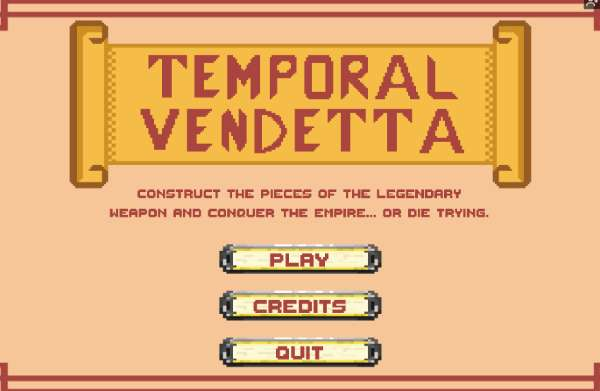
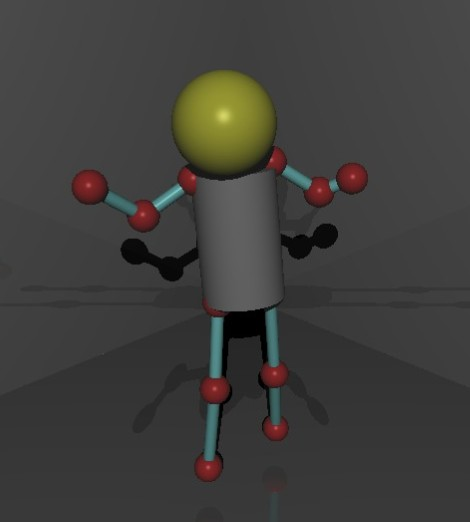
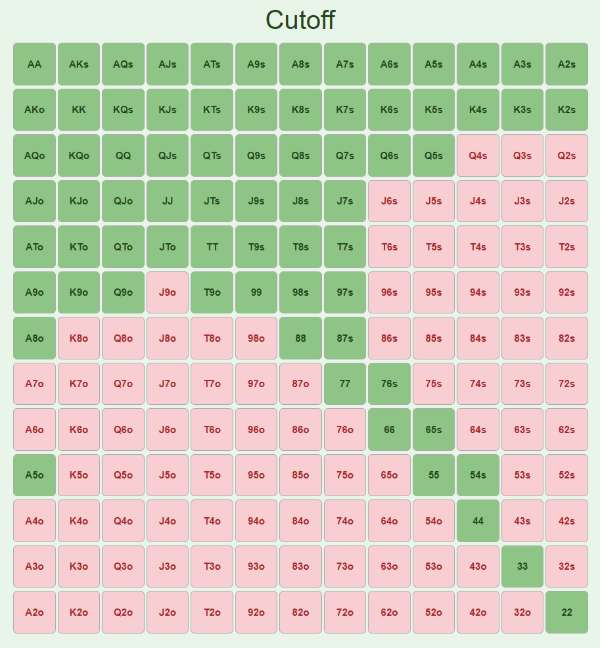
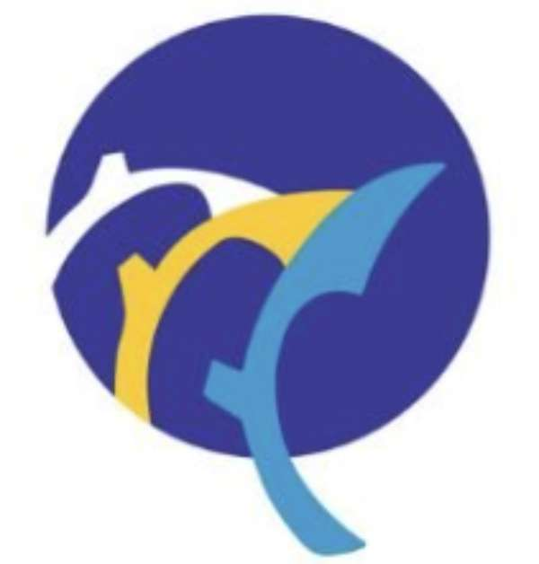
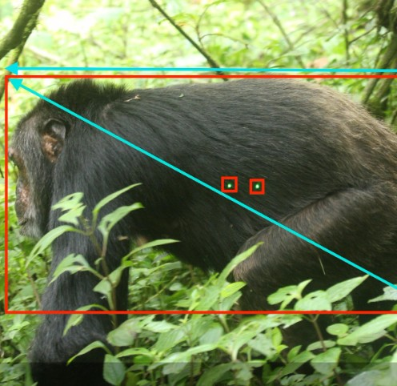

Projects
A selection of work spanning computer vision, web development, and data analytics.

Temporal Vendetta is a video game created using the Unity game engine that I built as part of a project team. My role was lead programmer where I focused primarily on level design, guard/enemy mechanics, and marketing for the game. The game comes complete with an audio produced by a team at Berklee as well as its own trailer and website I created.
Worked as a developer in a small team to build the Vibefinder web app. Our app bridges the gap between music discovery and live event planning by seamlessly integrating Spotify and Ticketmaster APIs. The application allows users to select their favorite music genres and instantly generate personalized playlists based on their preferences. The web link is no longer hosted on Heroku, but the entire project is available on GitHub.

The Dummy Is You: A WebGL-based 3D graphics application with real-time pose detection using MediaPipe. Control and interact with 3D scenes using your webcam and body movements. Also features interactive 3D scene manipulation and XML-based scene loading. Instructions for use on GitHub.

This is a personal project I created to use to study hand opening ranges based on GTO preflop poker charts. It's set to be used for the table size I've played most often, 8-max, and includes a full page with a chart for each seat position, as well as a trainer that deals hands to practice with at your choice of seat position.

This is a collection of Python scripts I wrote as part of my work for Calcarea to analyze the EU shipping industry. The programs scrape data from shipping database websites according to set filters, using key info like port calls, owner/manager, and DWT to generate reports that let me identify which multinational ship owners and managers have the most exposure to an EU ETS tax.

Capstone project to develop a computer vision system to estimate chimpanzee body size from images by improving an existing laser-guided pipeline and exploring a laser-free depth-based alternative, supporting long-term biological research and conservation. Utilizes Meta's SAM model as well as the Metric3D CV model. Final pipeline still in progress, but will be public soon.
About Me
Background, interests, and how to reach me.
I'm Jack Adkins, a Computer Science major and Economics minor at Tufts University School of Engineering with interests in data analytics and cybersecurity. My journey into computer science began early, from interning at Caltech where I built an automated feeding tracker using Python and robotics, to more recent roles like a Data Analytics Intern at Calcarea, where I analyzed shipping industry carbon emission trends to guide business decisions. I've had the opportunity to try many roles—grant writer, tutor, researcher—with each one showing me a new part of the world of CS. I'm open to roles across many industries where I can apply my skills in programming and computer science.